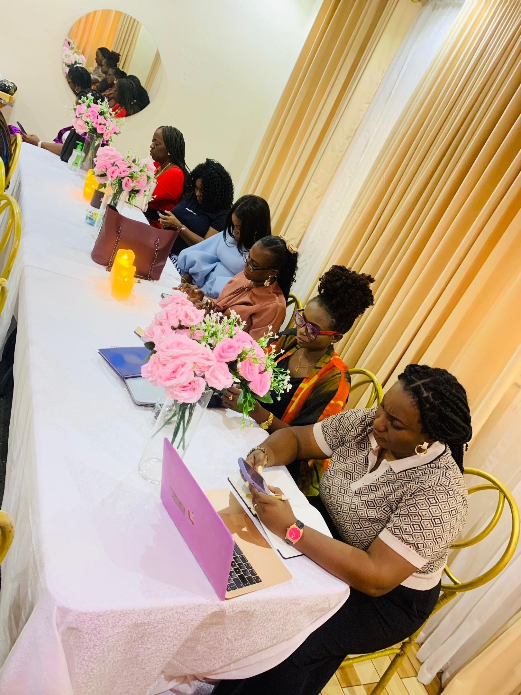

Tea Parties
Some of the most powerful ministry moments happen around a table.
DPW Tea Parties bring pastors' wives, ministers' wives, and women in Christian leadership together for an intimate two-hour gathering. Icebreakers open hearts, table topics spark conversations too good to cut short, and the room quickly feels like a reunion, even among women meeting for the first time.
Guards come down. Stories are shared. Burdens feel lighter. We close every gathering praying for one another. Tea Parties are completely free, and they come to cities as the opportunity arises.
Bring a Tea Party to your city →